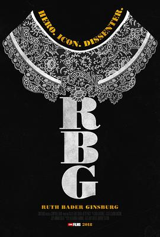

大法官金斯伯格 / RBG
又名：女大法官金斯伯格 / 鲁斯·巴德·金斯伯格 / 挑机法官RBG(港) / RBG：不恐龙大法官(台) / Ruth Bader Ginsburg
作品信息
| 导演 | 朱莉·科昂 / 贝齐·韦斯特 |
| 主演 | 鲁斯·巴德·金斯伯格 / 比尔·克林顿 / 奥林·G·哈奇 / 拉什·林博 / 安东宁·斯卡利亚 / 格洛丽亚·斯泰纳姆 / 妮娜·托滕贝格 / 乔治·W· 布什 / 巴拉克·奥巴马 / 唐纳德·特朗普 / 西奥多·奥尔森 |
| 类型 | 纪录片 / 传记 |
| 制片国家/地区 | 美国 |
| 语言 | 英语 |
| 上映日期 | 2018-01-21(圣丹斯电影节) |
| 片长 | 98分钟 |
| IMDb | tt7689964 |
最后一次看到是 2026-08-12T21:11:31+08:00 · 豆瓣原页